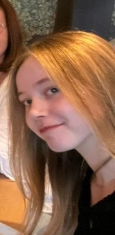

Who am I?

Hello, I'm Vera Elfferich.
I'm 18 and right now I am in my second year of Software Development, at Sintlucas Eindhoven.
My interest lies at front-end development. I'd love to find a future in Webdevelopment,
making it look and work perfectly to what's expected.
I'm very much still a beginner, but I'm eager to know and be able to do more.
Why Web?
I started Software Development wanting to learn how to code, obviously, and in the future make games.
Then after Sintlucas go to HKU to specialise in Gamedev.
But, having had to make games using Unity, I found myself not quite enjoying it.
Yet whenever we had an assignment that had to do with Web, I did enjoy.
So, that's when I came to the conclusion that I wanted to pursue Webdevelopment.
Also I've thought about doing something related to design before I decided on Software,
so I like being able to make websites look all nice.